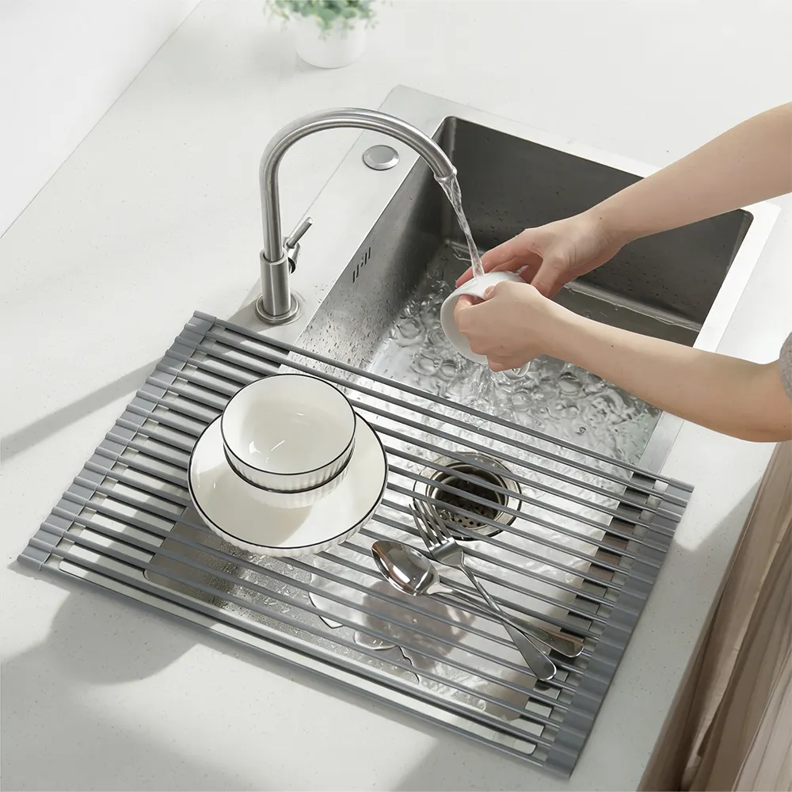
씻은 그릇은 바로 옆에 올려 두세요
매트가 싱크볼 위에 걸쳐 있어서, 씻은 그릇을 손 닿는 곳에 바로 올리면 돼요. 요리하면서 설거지를 해도 자리가 겹치지 않아요.
오늘도 식기건조대 옆 좁은 틈에 도마를 끼워 놓고 요리하셨나요?
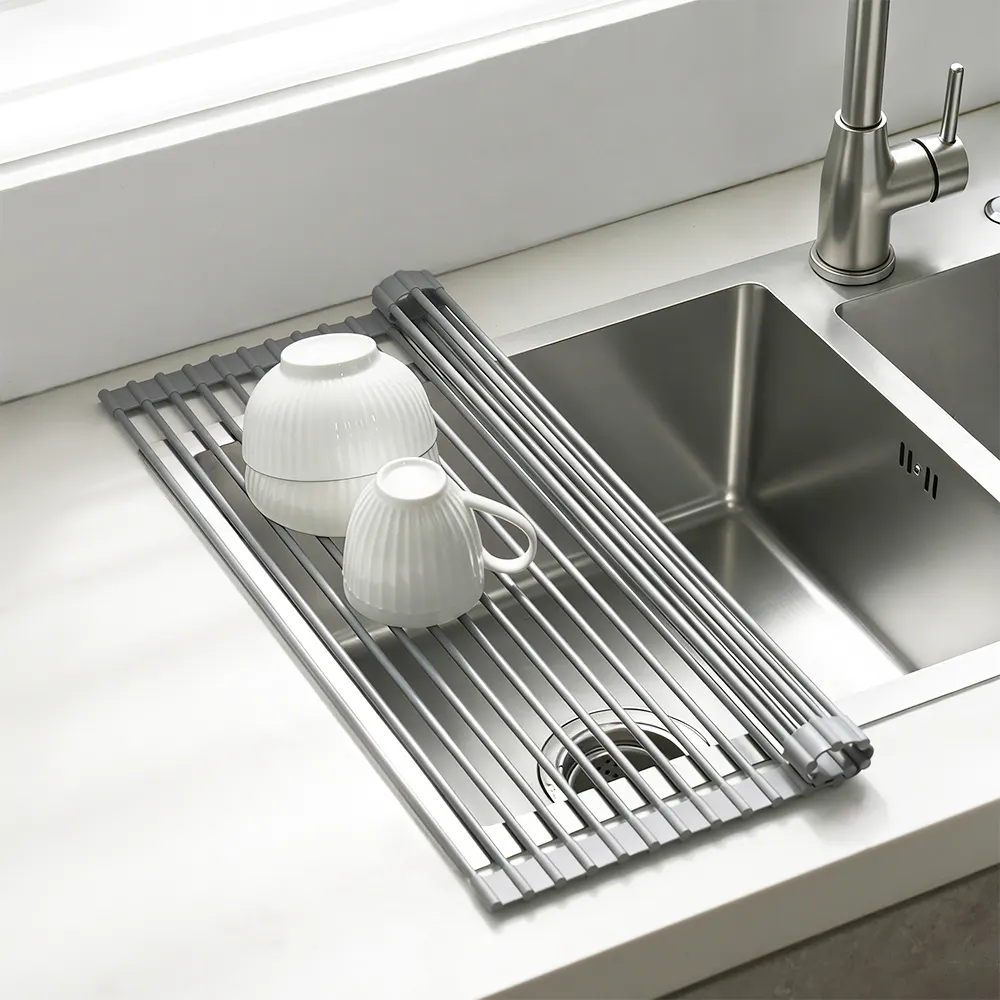
여기를 굴리면 펼쳐져요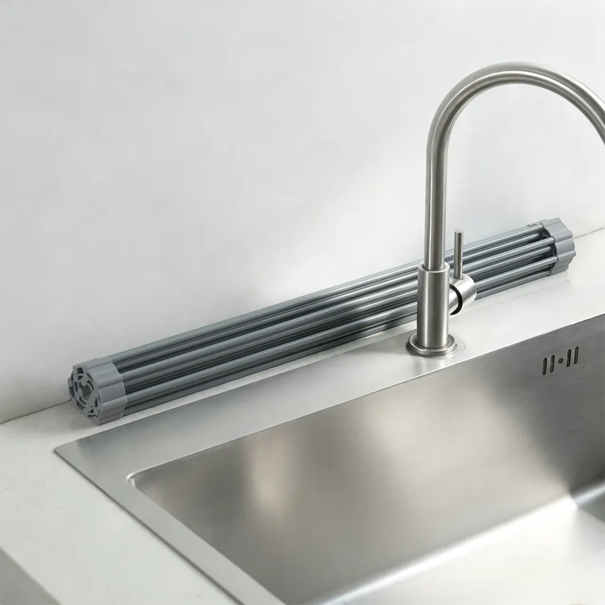
다 쓰면 이렇게 말아 둬요씻은 그릇은 싱크볼 위에 펼친 롤매트에 올려 두세요. 물기는 그대로 싱크볼로 떨어지고, 그릇이 다 마르면 매트는 돌돌 말아 수전 옆에 세워 두면 돼요.
이 포스팅은 쿠팡 파트너스 활동의 일환으로, 이에 따른 일정액의 수수료를 제공받습니다.
가격과 배송, 교환·반품 조건은 쿠팡에서 확인하고 결정하세요.
펼치면 52 × 33cm, 우리 집 싱크대에 맞을까요?건조대 하나가 조리대를 거의 다 차지하는 원룸 주방. 저녁 한 끼를 차리려 해도 뭔가를 먼저 치워야 해요.
마른 그릇을 찬장에 넣고 건조대를 벽 쪽으로 밀어야 겨우 도마 하나가 들어가요.
건조대는 이미 꽉 차 있어서, 요리하며 나온 냄비와 볼은 싱크볼에 그대로 쌓여 가요.
말릴 건 머그컵 하나와 수저 몇 개뿐인데, 건조대와 물받침은 늘 조리대 한쪽을 차지하고 있어요.
그렇다고 건조대를 치우면, 씻은 그릇은 어디에 두죠?
싱크볼 위에 롤매트를 걸쳐 펼치면, 거기가 바로 그릇 말리는 자리예요. 이제 조리대에는 건조대를 두지 않아도 돼요.

매트가 싱크볼 위에 걸쳐 있어서, 씻은 그릇을 손 닿는 곳에 바로 올리면 돼요. 요리하면서 설거지를 해도 자리가 겹치지 않아요.
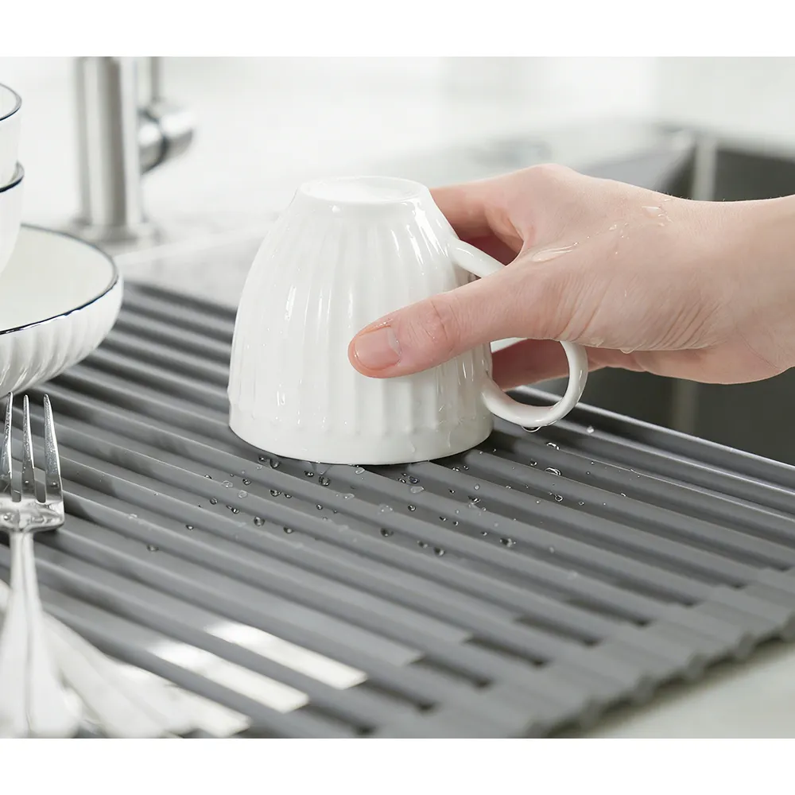
그릇에서 흐른 물은 봉 사이로 떨어져 바로 싱크볼로 빠져요.
그릇이 다 마르면 매트를 말아 수전 옆이나 틈새에 세워 두세요. 펼쳐 놓았을 때보다 자리를 훨씬 덜 차지해요.
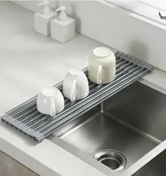
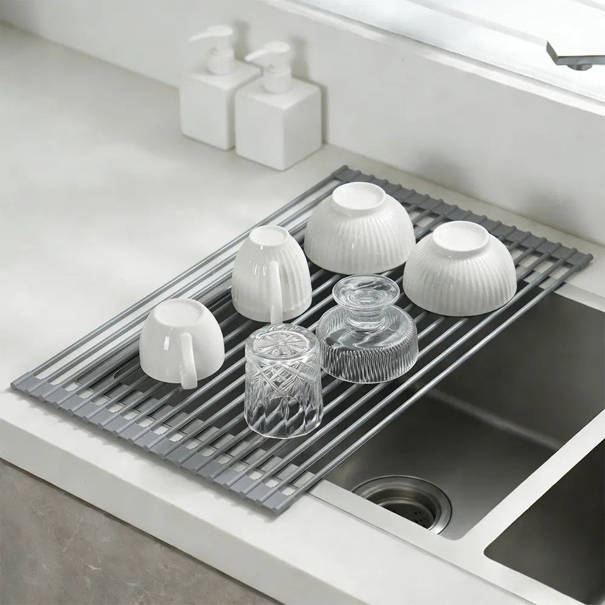
컵 몇 개뿐인 날엔 좁게, 설거지가 많은 날엔 넓게. 말린 쪽을 굴려 폭을 맞추면 돼요.
판매처 표기 그대로
상세페이지에 적힌 수치와 실제로 쓰는 순서를 그대로 옮겼어요.
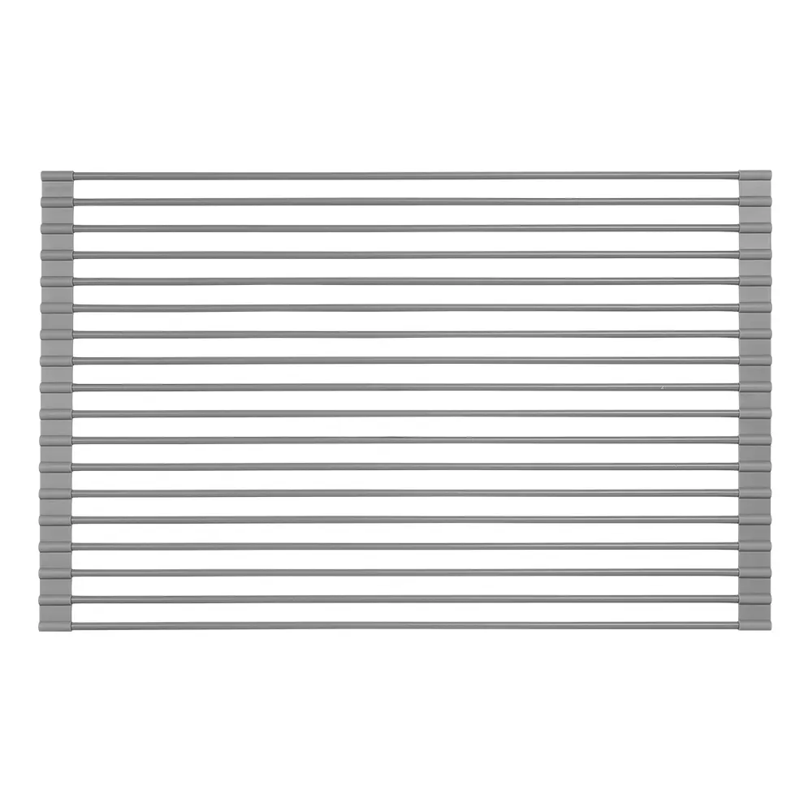
52 × 33cm
끝까지 펼쳤을 때 크기예요. 두께는 0.8cm, 무게는 1.04kg이에요.
판매처 상세페이지 제품 정보 기준
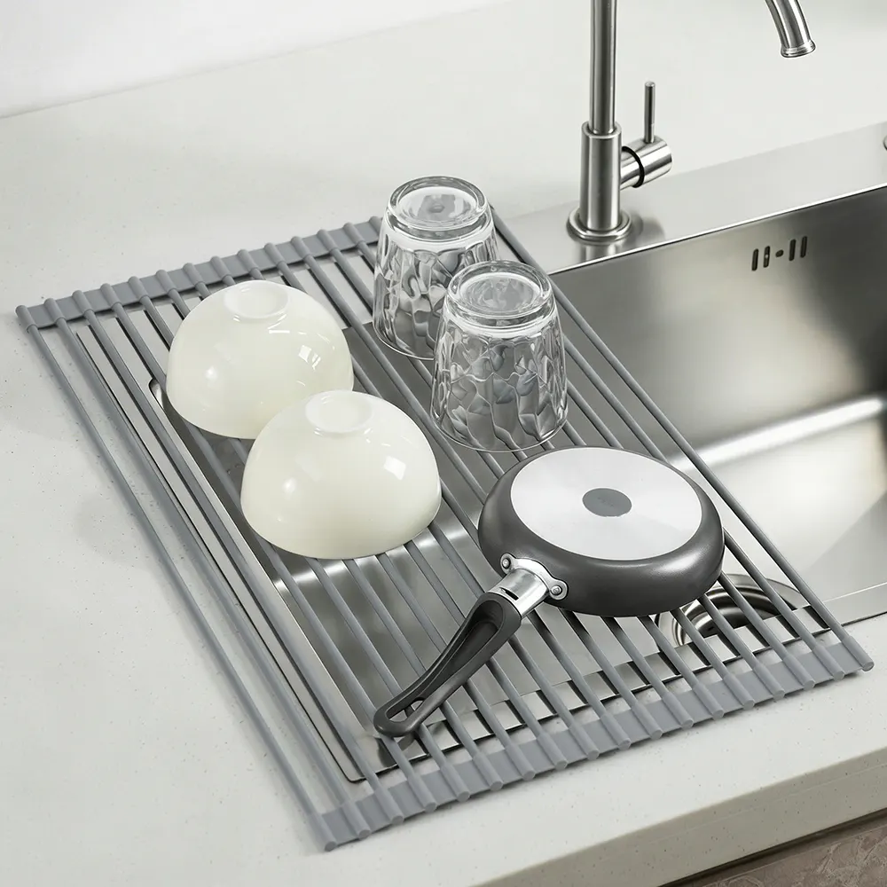
최대 10kg
봉 속이 스틸이라 그릇과 프라이팬을 함께 올려도 든든해요.
판매처 상세페이지 표기
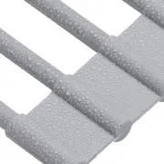
일체형 실리콘 코팅
봉 전체를 실리콘으로 감싸 물기와 습기에 강해요.
판매처 상세페이지 표기
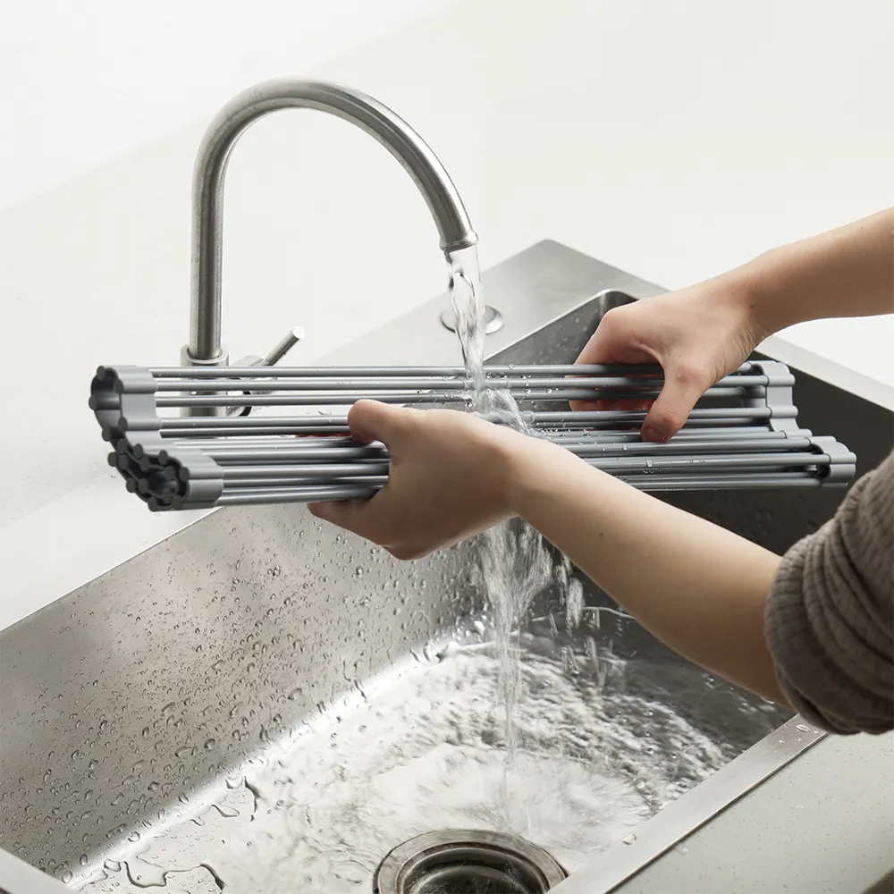
물로 헹구면 끝
다 쓰면 흐르는 물에 헹구거나 부드러운 행주로 가볍게 닦아 주세요.
판매처 상세페이지 관리 안내
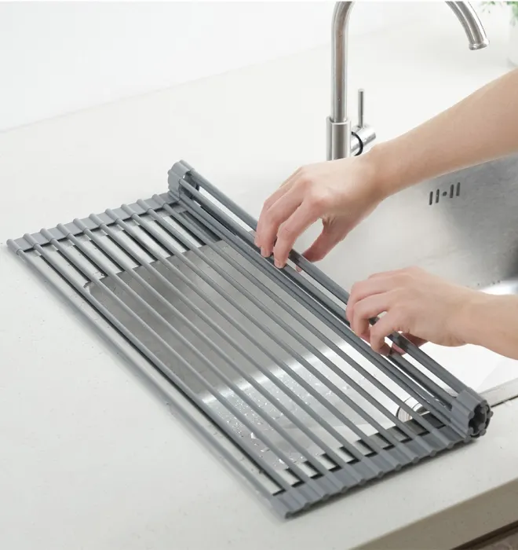
봉 양쪽 끝이 싱크볼 테두리에 걸치도록 올린 뒤, 말린 쪽을 굴려 필요한 만큼 펼쳐요.
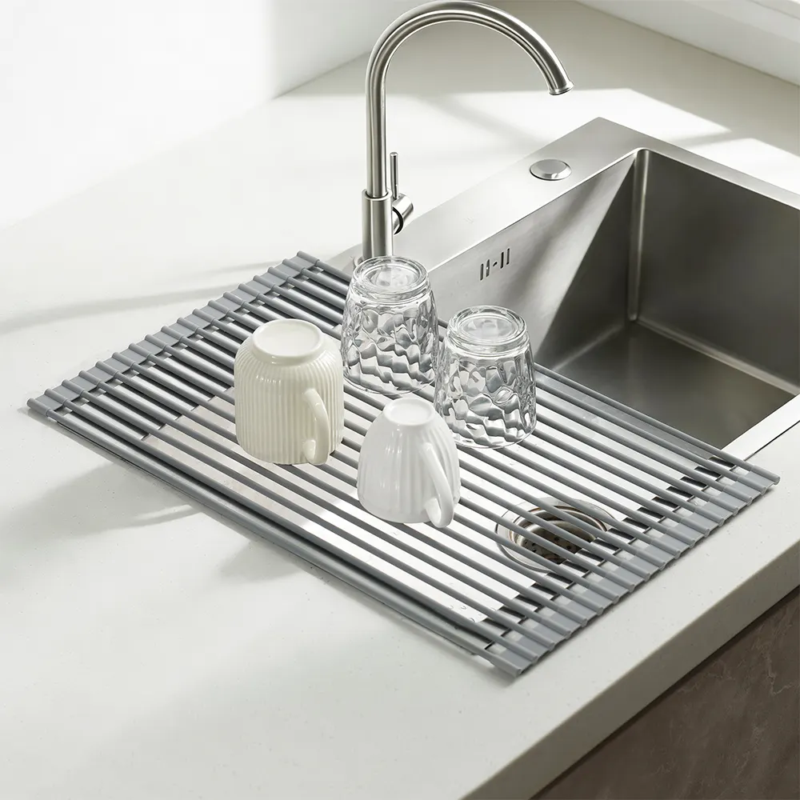
컵과 그릇은 입구가 아래로 가도록 엎어 두세요. 물은 봉 사이로 빠져요.
그릇을 치운 뒤 매트를 돌돌 말아 수전 옆이나 틈새에 세워 두세요.
“생각보다 가볍고 본인이 원하는 크기대로 사용 가능해요! 설거지 건조 다 되면 작게 접어둘 수 있고 공간 활용 엄청 좋아요!”
“냄비처럼 조금 무게가 있는 물건을 올려두어도 생각보다 탄탄하게 잘 버텨줘요. 사용하지 않을 때는 돌돌 말아서 싱크대 한쪽에 올려두면 되니까 보관하기도 정말 편해요.”
“설거지 양이 적을 때는 이것만 쓱 펼쳐서 말리면 되니까 정말 편해요. 구매하시기 전에 우리 집 싱크대 볼 깊이와 가로 길이를 미리 체크해 보시는 것을 추천합니다!”
실제 구매 후기 중 일부를 발췌했어요. 문장은 원문 그대로 옮기고 길이만 줄였어요.
크기는 재는 위치와 방법에 따라 조금 다를 수 있어요. 패키지가 바뀌는 중이라 이전 패키지나 새 패키지 중 하나로 배송될 수 있지만, 품질과 내용물은 같아요.
끝까지 펼친 크기는 봉 길이 방향으로 52cm, 펼치는 방향으로 33cm예요. 봉 양쪽 끝이 싱크볼 테두리에 걸쳐져야 하니, 주문 전에 줄자로 두 가지만 확인해 주세요.
안쪽 폭이 52cm와 거의 같거나 더 넓으면 매트가 싱크볼 안으로 빠질 수 있어요. 펼치는 방향(33cm)은 필요한 만큼만 펼쳐 쓰면 되니, 싱크볼 세로 길이에 딱 맞출 필요는 없어요.
크기는 재는 위치와 방법에 따라 조금 다를 수 있어요. (판매처 표기)
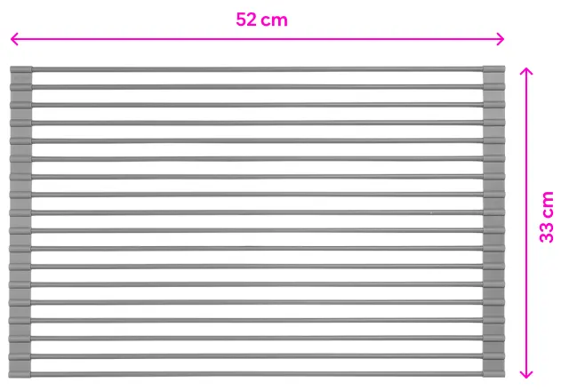
아니요. 판매처 안내에 따라 도마 대신 쓰거나 뜨거운 냄비·주전자를 올리지 말고, 그릇을 말리는 용도로만 써 주세요. 이 매트는 그 위에서 요리하라는 제품이 아니라, 건조대를 싱크볼 위로 옮겨서 조리대를 비워 주는 제품이에요.
접시를 꽂는 홈이 없어서 그릇과 접시는 엎어서 올려야 해요. 혼자 먹은 한 끼 설거지처럼 그릇과 컵 몇 개를 말리기에 알맞아요. 접시를 여러 장 세워 말려야 한다면 칸이 나뉜 건조대가 더 편할 수 있어요.
색상은 쿠팡 상품 페이지에서 고를 수 있어요.
좁은 주방을 위한 정리
싱크볼 위에 펼쳐 그릇을 말리고, 다 쓰면 돌돌 말아 세워 두는 실리콘 식기건조 롤매트예요.
주문 전에 싱크볼 안쪽 폭이 52cm보다 좁은지 확인하셨나요?
사이즈 확인하기이 포스팅은 쿠팡 파트너스 활동의 일환으로, 이에 따른 일정액의 수수료를 제공받습니다.
교환·반품은 구입처인 쿠팡을 통해 안내받을 수 있어요. 가격과 옵션을 보고 결정해도 늦지 않아요.